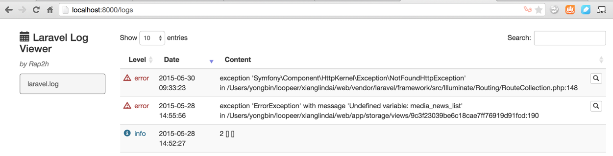

laravel 日志视图化查看
2015-05-30
第三方插件来源地址：https://github.com/rap2hpoutre/laravel-log-viewer
使用方法：
1.编辑composer.json文件，增加
"rap2hpoutre/laravel-log-viewer": "0.2.*"
2.编辑config/app.php文件，增加
'Rap2hpoutre\LaravelLogViewer\LaravelLogViewerServiceProvider',
3.编辑route文件，增加
Route::get('logs', '\Rap2hpoutre\LaravelLogViewer\LogViewerController@index');
4.访问路由，如http://localhost:8000/logs，将显示日志文件内容列表记录
